Sentinel
SentinelUn cliente ve un cargo que no reconoce. ¿Quién responde?
Dos cosas pueden salir mal
Un chatbot puede inventar. Puede afirmar un dato que no verificó. Puede decir que existe un caso cuando no existe.
Un asesor puede empezar de cero. Un traspaso sin datos verificados obliga al cliente a repetir todo.
Usuarios: clientes de bancos en México, Colombia y Argentina, en español y portugués.
Qué dicen los datos
llamadas por disputas en la ventana de desarrollo, de 464,791.
horas de agente al mes en disputas
de las llamadas por disputas terminan resueltas
evidence/problem/dev-v1/summary.json · demand, hours, reasons. El conjunto de datos es sintético.
SentinelSentinel lo convierte en un caso verificado, o en un asesor bien informado.
- Español (es-MX, es-CO, es-AR) y portugués (pt-BR).
- Abre una disputa solo cuando la política lo permite y el cliente confirma.
- Dice que existe un caso solo después de volver a leer el caso.
Cuatro casos de demostración
Un cargo, una confirmación, un número de caso.
Compras iguales. El sistema pregunta cuál.
El sistema traspasa con los datos verificados.
El sistema no juzga el fraude. Lo hace un asesor.
Demo en vivo: enlace en el README. Los datos de la demo son sintéticos.
SentinelLa IA conversa. Las reglas deciden.

El modelo solo etiqueta la intención. El código enmascara, decide, actúa y verifica.
SentinelNo lo decimos. Lo medimos.
ataques con un resultado inseguro, de 42 probados.
de 42 detenidos por el código de producción
de 42 seguros solo con el modelo mock. Lo decimos.
de exactitud de intención del enrutador LLM en 280 turnos reservados. La línea base de palabras clave logra 53.9%.
La política deja resolver 16 de 56 casos. Los demás necesitan un traspaso o una pregunta. 0/56 terminan de forma insegura. El enrutador suma 0 casos resueltos sobre la línea base: la línea base llega al mismo techo.
Fuentes: evidence/adversarial, evaluation-runs/2024Q4-eval-v7, evaluation-runs/2024Q4-resolution-v2 y -gap-v1. Una simulación no es una medición de producción.
SentinelTu marca. Nuestra capa de confianza.
Maqueta de dos marcas en la misma pantalla. Mismo código, misma política.
- El nombre del banco y el color de acento vienen de dos variables de entorno, no del código. Un acento que no pasa la verificación de contraste vuelve al valor por defecto.
- La capa de confianza no cambia: la misma política, las mismas verificaciones, la misma relectura.
- El asesor recibe un paquete: la solicitud, los datos verificados, las acciones que el sistema intentó y la traza de cada paso.
- El modelo nunca ve el id del cliente.
SentinelLo que no construimos, y por qué.
Límites
- Datos: sintéticos, solo en español, tres países. Los casos en portugués los escribió un modelo.
- Techo: la política deja resolver 16 de 56 casos simulados (Simulación). El sistema resuelve todos ellos. No resuelve ninguno más.
- Mocks: almacén Gold, acceso y sesión, asesor, almacén de casos y valores de la política. Cada uno tiene un reemplazo en producción.
- Números: ninguno de estos números es una medición de producción.
Hoja de ruta
- Customer 360: el saldo no tiene una fecha de corte utilizable.
- Investigación de un cargo: necesita datos reales del banco.
- Conjunto de retroalimentación: resultados de los traspasos a asesores.
- Asistente de gastos: necesita saldos e historial.
- Consulta de políticas: necesita los documentos de política del banco.
- Enrutamiento de traspasos: por idioma y especialidad.
README.md#roadmap · docs/architecture/mocks.md